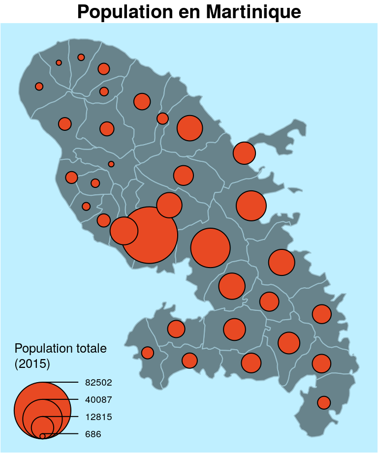
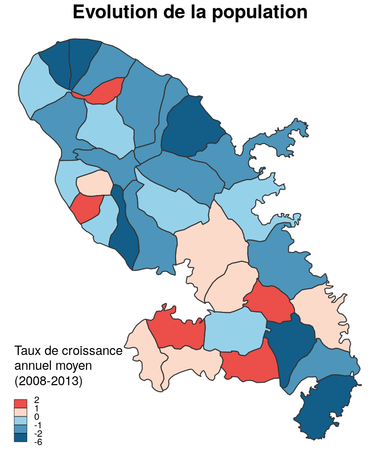
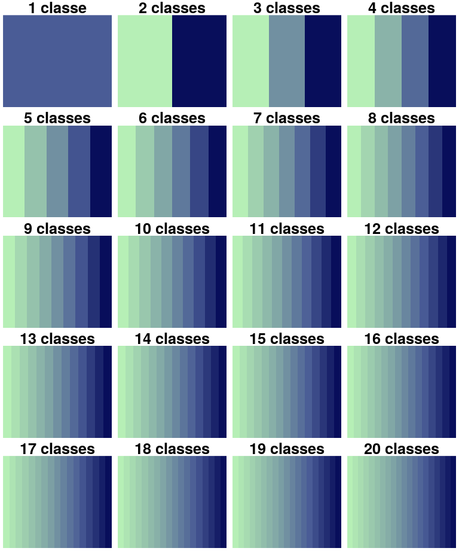
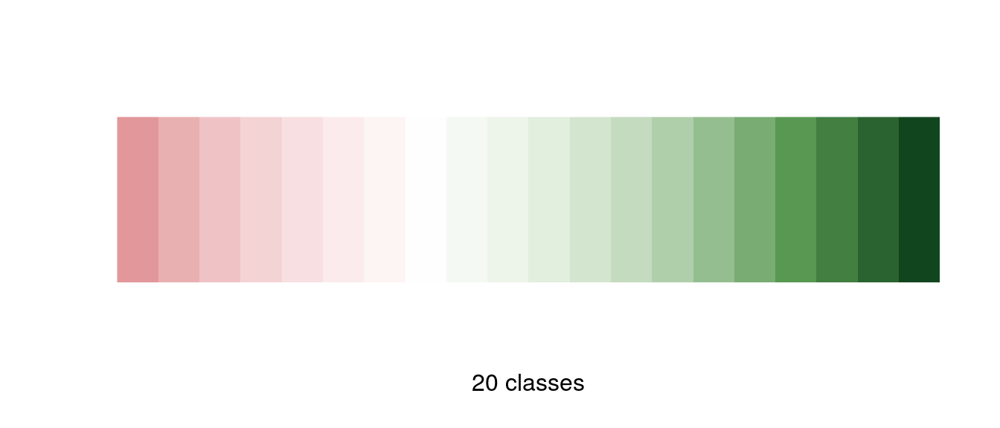
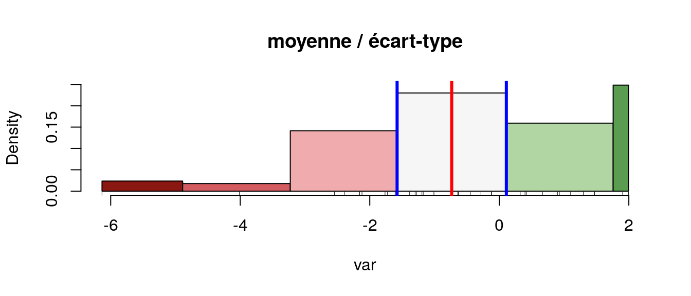
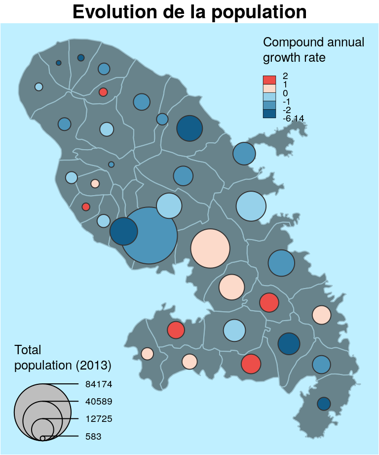
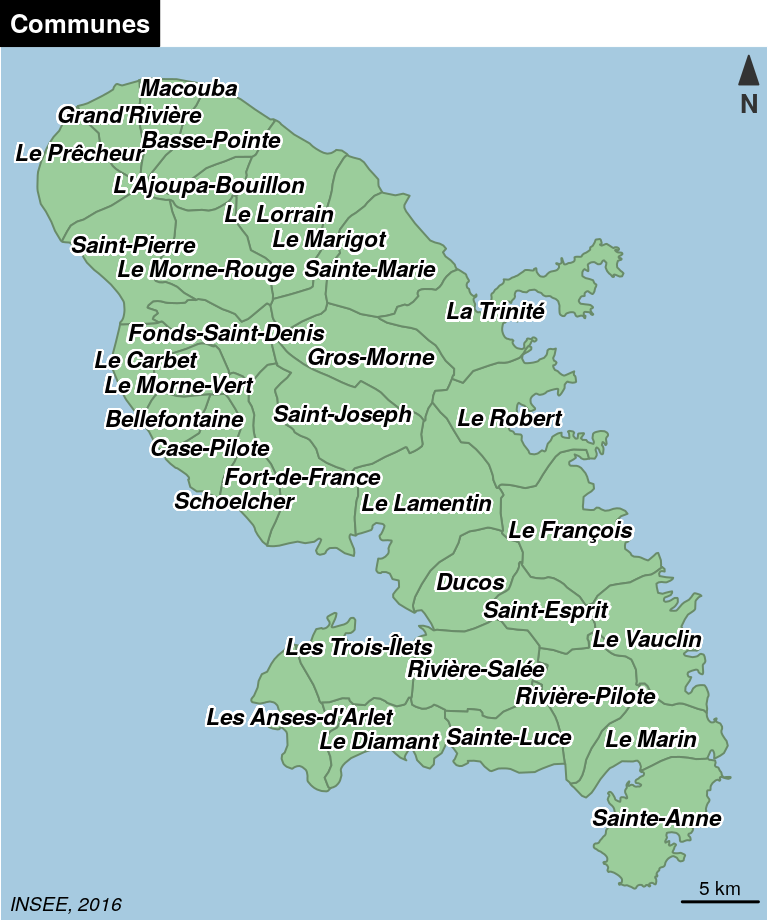

Chapitre 2 Cartographie thématique
2.1 Le package cartography
Le package cartography permet de créer et intégrer des cartes thématiques dans sa chaîne de traitements en R. Il permet des représentations cartographiques tels que les cartes en symboles proportionnels, des cartes choroplèthes, des typologies, des cartes de flux ou des cartes de discontinuités. Il offre également des fonctions qui permettent d’améliorer la réalisation de la carte, comme des palettes de couleur, des éléments d’habillage (échelle, flèche du nord, titre, légende…), d’y rattacher des labels ou d’accéder à des APIs cartographiques.
Pour utiliser aisément ce package, plusieurs sources d’intérêts peuvent être consultées :
- La documentation du package qui documente toutes les fonctions du package, accessible directement dans R Studio. Pour cela, vous pouvez taper simplement :
?cartographyLa cheat sheet de cartography, qui résume les principales fonctions du package de façon synthétique.

La vignette associée au package, qui présente des réalisations issues de ce package, elle aussi accessible directement dans R.
Le blog R Géomatique, maintenu par l’auteur de cartography qui met à disposition ressources et exemples d’intérêt liés au package et à la représentation d’information spatiale sous R.
2.1.1 Symboles proportionnels
library(cartography)
library(sf)
# Import des données
mtq <- st_read(system.file("shape/martinique.shp", package="cartography"))
# Communes
plot(st_geometry(mtq), col = "lightblue4", border = "lightblue3",
bg = "lightblue1")
# Symboles proportionnels
propSymbolsLayer(x = mtq, var = "P13_POP",
legend.title.txt = "Total\npopulation (2013)")
# Titre
title(main = "Population en Martinique")
2.1.2 Carte choroplèthe
mtq$cagr <- (((mtq$P13_POP / mtq$P08_POP)^(1/4)) - 1) * 100
choroLayer(x = mtq, var = "cagr", breaks = c(-6.14,-2,-1,0,1,2),
col = c("#135D89", "#4D95BA", "#96D1EA", "#FCDACA", "#EC4E49"),
legend.title.txt = "Compound annual\ngrowth rate")
title(main = "Evolution de la population")
2.2 Palettes de couleurs
display.carto.all(20)
display.carto.pal("orange.pal")
mypal <- carto.pal(pal1 = "wine.pal", n1 = 7, pal2 = "green.pal", n2 = 12,
middle = TRUE, transparency = TRUE)
k <- length(mypal)
image(1:k, 1, as.matrix(1:k), col=mypal, xlab = paste(k," classes",sep=""),
ylab = "", xaxt = "n", yaxt = "n",bty = "n")
2.3 Discrétisations
var <- mtq$cagr
moy <- mean(var)
med <- median(var)
std <- sd(var)
# Quantile intervals
breaks <- getBreaks(v = var, nclass = 6, method = "quantile")
hist(var, probability = TRUE, breaks = breaks, main="quantiles",
col = carto.pal(pal1 = "wine.pal",3, "green.pal", 3))
rug(var)
abline(v = med, col = "blue", lwd = 3)
# Mean and standard deviation (msd)
breaks <- getBreaks(v = var, method = "msd", k = 1, middle = TRUE)
hist(var, probability = TRUE, breaks = breaks, main="moyenne / écart-type",
col = carto.pal(pal1 = "wine.pal",3 , "green.pal", 2, middle = TRUE))
rug(var)
abline(v = moy, col = "red", lwd = 3)
abline(v = moy + 0.5 * std, col = "blue", lwd = 3)
abline(v = moy - 0.5 * std, col = "blue", lwd = 3)
2.4 Combinaisons
plot(st_geometry(mtq), col = "lightblue4",
border = "lightblue3", bg = "lightblue1")
propSymbolsChoroLayer(x = mtq, var= "P13_POP",
legend.var.title.txt = "Total\npopulation (2013)",
var2 = "cagr", legend.var.pos = "bottomleft",
breaks = c(-6.14,-2,-1,0,1,2),
col = c("#135D89", "#4D95BA", "#96D1EA", "#FCDACA", "#EC4E49"),
legend.var2.title.txt = "Compound annual\ngrowth rate")
# Title
title(main = "Evolution de la population")
2.5 Labels
plot(st_geometry(mtq), col = "darkseagreen3", border = "darkseagreen4",
bg = "#A6CAE0")
labelLayer(x = mtq, txt = "LIBGEO", col= "black", cex = 0.7, font = 4,
halo = TRUE, bg = "white", r = 0.1, overlap = FALSE,
show.lines = FALSE)
2.6 Les données OSM
OpenStreetMap (OSM) est un projet de cartographie participative qui a pour but de constituer une base de données géographiques libre à l’échelle mondiale. OpenStreetMap vous permet de voir, modifier et utiliser des données géographiques dans le Monde entier. En résumé, c’est comme Google Maps, mais en mieux…
2.6.1 Données vectorielles
library("osmdata")
## Data (c) OpenStreetMap contributors, ODbL 1.0. http://www.openstreetmap.org/copyright
prj <- st_crs(Paris)
bbox <- st_bbox(st_transform(Paris,4326))
q <- opq(bbox = bbox , timeout = 2000) %>% add_osm_feature(key = 'man_made', value = 'surveillance')
cameras <- osmdata_sf(q)$osm_points
cameras <- st_transform(cameras, prj)
cameras$ok <- st_intersects(st_geometry(cameras), st_geometry(Paris), sparse = FALSE)
cameras <- cameras[cameras$ok == T,]
Paname <- getTiles(x = Paris, type ="cartodark", crop = TRUE)
tilesLayer(Paname)
par(mar = c(0.5,0.5,1.5,0.5))
plot(st_geometry(Paris), lwd=1, border="white", lty=2, add=T)
plot(st_geometry(cameras), pch=20, col="red", add=T)2.6.2 Données raster
tiles <- getTiles(x = mtq, type = "osm", crop=T, zoom = 11)
tilesLayer(tiles)
plot(st_geometry(mtq), add=T)
2.7 Cartographie interactive
leaflet / mapview